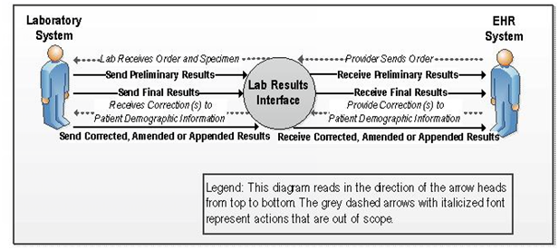
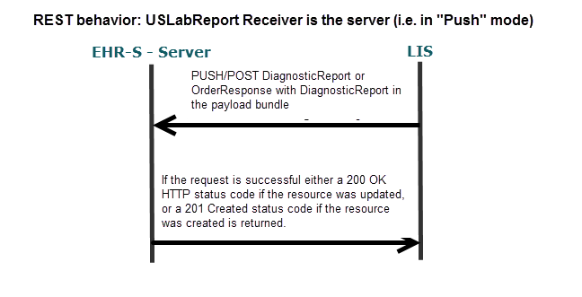
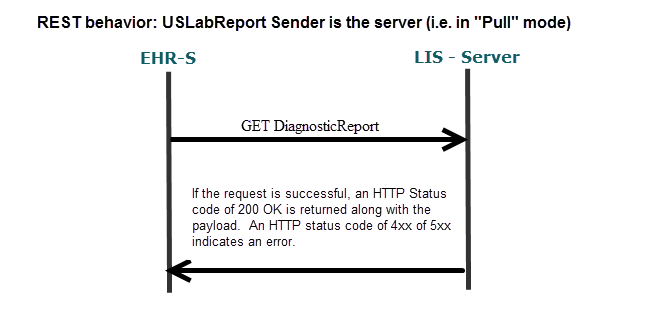

A.4.1 Purpose 
The FHIR USLab Public Health Report (FHIR ELR) Implementation (FHIR ELR) is based upon the USLab Report Implementation and repeats most of that content here as well as the additional requirements, specifications and standards, and on providing the implementation guidance needed to transmit reportable laboratory observations to appropriate US local, state, territorial and federal health agencies using using FHIR in the RESTful framework. FHIR ELR facilitates the inclusion of information necessary for public health reporting in the larger test order - test result process between ordering providers/laboratories and performing laboratories to ensure that the data is available to be sent to PH when necessary. Harmonizing the technical specifications (format and vocabulary) for the test order (order placer sends order to lab), test result (lab sends result to order placer), and reportable test result (lab sends result to PH) enhances interoperability and data quality thus improving the overall laboratory result reporting process for both the sender and the receiver.
This implementation is not specific to any pathogen or reportable condition and is applicable for most biological and chemistry reportable laboratory observations. Each state and territory has requirements for laboratories to report certain findings to health officials. Authority to establish a list of reportable conditions and to specify the content of those reports resides with the individual public health jurisdiction. Reports made to Public Health come in two forms: case reports (not the subject of this guide), and laboratory reports related to reportable conditions. Reporters can access further information about reportable conditions at the website for their own Public Health jurisdiction relevant to their service area. Additionally, this implementation does not replace the need for each public health jurisdiction to document additional constraints of their specific implementation.
A.4.1 Audience
This guide is designed for use by analysts and developers who require guidance on FHIR resources, elements and specific extensions
relative to the Laboratory Results Interface (LOI) initiative, HL7 V3 Lab Normative Standard and electronic laboratory reporting (ELR) requirements to Public Health. Users of this guide must be familiar with the details of the FHIR Specification and resource processing. This guide is not intended to be a tutorial on that subject.
A.4.1 Conventions
This guide adheres to the following conventions:
- The guide is constructed assuming the implementer has access to the FHIR Specification. Although some information from the standard is included in this implementation guide, much information from the standard has not been repeated here.
- The guide is constructed assuming the implementer SHALL conform to the FHIR RESTful API
- The rules defined in the FHIR Conformance Profile were used to document the use case for, and constraints applied to, the resources described in this guide.
A.4.1 Key Technical Decisions
A.4.1.1 Profile And Component Architecture
This guide uses FHIR profiles on the following resource to define a minimum set of requirements to enable the
successful exchange of laboratory orders:
- DiagnosticOrder
- DiagnosticReport
- Organization
- Media
- Organization
- Patient
- Practitioner
- Specimen
The main objective is to ensure that EHR systems and
Laboratory systems can exchange laboratory orders with minimum if any modifications from one
combination to another combination of software, while maintaining flexibility to enable software
developers to provide more capabilities using the same core Resource definitions.
A.4.1.2 Use Of Vocabulary Standards
This guide calls for specific vocabulary standards for the exchange of laboratory information such as
LOINC and SNOMED. Standard vocabularies, particularly coded laboratory tests and their results,
enable automated decision support for patient healthcare, as well as for public health surveillance of
populations. Value Sets resource are provided as part of this implementation.
A.4.1.3 Snapshot Mode
FHIR only functions using snapshot mode - updates are communicated by sending a complete copy of the instance with the new data filled in. If a correction and/or status update to Observation Resource is necessary, the DiagnosticReport with all references to all Observation Resource, even if previously
sent, shall be resent with the correction and/or current status and/or current values. For example,
when a Complete Blood Count with manual differential is ordered, the blood count will be released
and then at a later time the manual differential will be performed and released. When the blood count
is released the DiagnosticReport will reference only the Observation Resources for the count as final results. When the differential is completed,
the DiagnosticReport will reference all previous Observation Resources as well as the new Observation resources - in this case the blood
count and the differential results.
Examples of a partial, final and corrected DiagnosticReport Bundle.
A.4.1.4 Scope Of Implementation
Due to receiving system variations and need, this guide does not specifically indicate for each field
whether to store it or not. This is left to the individual system's scope and purpose.
A.4.1 Use Case
This use case is based upon existing regulatory requirements for laboratories to report "reportable" laboratory test results to local public health agencies. This use case was developed as a collaborative effort between CSTE and CDC and the HL7 Pubic Health and Emergency Response Workgroup.
A.4.1.1 Scope
The scope is the sending of "reportable lab results from a laboratory to a Public Health agency is US Realm.
A.4.1.1.1 In Scope
- Defining the core data elements required for electronic laboratory reporting of reportable laboratory test results to Public Health.
-
Reporting of clinical laboratory test results to public health in the US Realm
- Including results from public health laboratories.
- Including the use case where public health is the originator of the order for testing.
- Sending laboratory test results as standardized structured data so they can be incorporated that way into a Public Health Disease Surveillance System (DSS).
- Reporting test results for an order that was placed either manually or electronically.
- Harmonization of data elements that are used in both laboratory orders and results.
- Laboratory results for individual living subjects (persons and animals).
A.4.1.1.2 Out of Scope
- Specifications and implementation guidance on laboratory ordering transactions. ( see USLabOrder
- Querying for laboratory results.
- Querying for historical laboratory results.
- Receiving historical laboratory results.
- Reporting of results from laboratory to laboratory.
- Querying patient demographics.
- The use case for public health laboratory test orders.
- Reporting of results to Cancer Registries.
- Results from nonliving subjects (water, food, air).
- Reporting of Healthcare Associated Infections (HAI) to the National Healthcare Safety Network (NHSN).
A.4.1 Actors
There are two actors that have responsibilities related to the conformance profiles defined in this
document:
- Laboratory Report Sender - The originator of the DiagnosticReport Resource Instance that declares conformance to "RESTful FHIR" and
FHIR profiles defined in this guide. This actor is the Organization Resource referenced through the .performer (Organization) Resource within FHIR.
- Laboratory Report Receiver - The Public Health receiver of the DiagnosticReport Resource Instance that declares conformance
to "RESTful FHIR" and FHIR profiles defined in this guide. This actor is implied within FHIR. ( i.e. not explicitly referenced in the DiagnosticReport Resource Instance or the linked resources).
A.4.1 Results for Ambulatory Care Context Diagram
Figure 2-1. Context Diagram

A.4.1.1 User Story
A Provider (orderer) may enter a laboratory order into an ambulatory DSS. A laboratory
requisition is generated (paper or electronic) and is communicated to the laboratory. The information
in the laboratory requisition is entered manually or captured electronically into the LIS. After the
specimen(s) has been collected and, if necessary, shipped or delivered to the laboratory, the
laboratory processes the specimen(s). If the specimen is satisfactory for testing the laboratory will
perform the test. Prior to successful completion of a test, communication may also be necessary to
indicate cancellation, failure to perform the test and the related reasons; for example if the specimen
is either not appropriate for the ordered test, or otherwise unsatisfactory the rejection of the specimen
will be communicated using USlabReport profile. Order cancellation notifications should be
communicated using the USLabOrder profile. The laboratory performs or attempts to perform the test(s). If testing is
successful, results are obtained and entered/released in the LIS. An authorized person at the
laboratory reviews and approves the laboratory test results, or the certifying laboratory reviewer of
record in the case of an auto-verification process, to be sent to the provider and any non-ordering providers requested in the laboratory order.
The results are either pushed or pulled into the provider's DSS (results receiver).
The DSS incorporates the results into the patient's electronic record. The provider logs into his/her
DSS and views the laboratory results in order to inform patient care decisions.
The laboratory result is determined to be a reportable laboratory result for the patient's and/or the provider's public health jurisdiction. The results sender, e.g., LIS or EHR, transmits the results to the appropriate public health jurisdiction. The public health jurisdiction's ELR-PH Receiver incorporates the results in their disease surveillance system allowing for the appropriate follow up by the public health jurisdiction.
A.4.1.1.1 Use Case Assumptions
- Public Health officials can securely access clinical information through an DSS.
- Appropriate security and transport protocols; patient identification methodology; requisition
(order) identification methodology; consent; privacy and security procedures; coding, vocabulary
and normalization standards have been agreed to by all relevant participants.
- This Use Case only addresses the exchange of laboratory results that are associated with the In
Scope laboratory tests.
- For the specimen collection process the data included in the dataset considerations table 6 are assumed to be available and reported in the result.
- Legal and governance issues regarding data access authorizations, data ownership, and data use are in effect.
-
Established network and policy infrastructure to enable consistent, appropriate, and accurate
information exchange across provider systems, data repositories and locator services. This
includes, but is not limited to:
- Methods to identify and authenticate users;
- Methods to identify and determine Providers of care;
- Methods to enforce data access authorization policies;
- Methods to ensure the veracity of data;
- Detailed audit trails are kept as necessary by all participating systems.
- Security and privacy policies, procedures and practices are commonly implemented to support
acceptable levels of patient privacy and security; i.e. HIPAA, HITECH and EHR certification
criteria.
- A LIS will be the source of laboratory test results while an DSS will be the recipient.
- This Use Case acknowledges the variations in requirements for reporting across local, state,
tribal, and territorial boundaries as well as voluntary versus mandatory requirements.
- Laboratories meet accreditation criteria according to jurisdiction requirements or agency criteria.
A.4.1.1.2 Pre-Conditions
- An order has been generated by an Ordering Provider for one or more laboratory tests results to
be produced.
- When indicated, the Laboratory receives request to send laboratory results to a non-order placer.
- The Laboratory receives an order (electronic, paper, etc.) or the Laboratory receives a request to
re-run (repeat) a test, or determines a need to re-run a test for possible correction, or determines
that reflex testing (which is based on criteria set by the medical review board) is required or
determines the need to amend a test result based on erroneous information.
- The Laboratory receives the appropriate clinical information to perform the ordered test.
- Laboratory has entered manually or through the interface pertinent (or corrected) data from an
order into the LIS
- Laboratory has received and processed properly identified specimen(s) related to the ordered
test(s).
- Laboratory entered or received from the ordering EHR-S, pertinent data from/about the specimen
into the LIS.
- Laboratory performed the ordered tests on received specimens and/or incorporated calculated
and reference data to produce the results to be exchanged.
- The laboratory DiargnosticReport resource refers to the appropriate Patient resource and DiagnosticOrder resource
to associate the laboratory results to the correct patient and original order.
- The LIS is capable of and ready to send laboratory results using FHIR and REST and standardized
structured data format.
- Public Health agency's DSS is in place and capable of receiving laboratory results using FHIR and REST and standardized
structured data format.
- The laboratory result is verified and ready for release.
- Each public health jurisdictional entity has previously defined the reportable conditions appropriate to its jurisdiction.
- Laboratory result senders are responsible for the setup of their system with the reportable conditions appropriate to its jurisdiction.
A.4.1.1.3 Post-Conditions
- Laboratory results are accurately reported and successfully transmitted electronically from the
LIS to the Public Health agency's DSS, module or other results receiver.
- The Public Health agency's DSS has electronically received the laboratory results, incorporated in a
standardized structured format, and if available, associated with a patient and laboratory order.
A.4.1.1.4 Functional Requirements
todo
A.4.1.1.4.1 Sequence Diagram for Reporting Laboratory results
Figure 2-2

Figure 2-3

A.4.1 Error Handling
Refer to the FHIR Specification on REST status codes and the use of the OperationOutcome Resource when further information about the transaction error is needed. Note: The error handling specifications are currently not fully defined for this implementation.
A.4.1 Code Systems And Value Sets
Successful message implementation requires that transmitted messages (message instances) contain
valid values for coded fields. For further discussion on Using codes in FHIR refer to the FHIR specification.
A.4.1.1 LOINC
The use of the Logical Observation Identifiers Names and Codes (LOINC)  code system is required
where a LOINC code is available for the Observation.name, i.e. the being resulted. Appropriate status is defined in the LOINC
Manual Section 11.2 Classification of LOINC Term Status. If a local coding system is in use, a local code should also be sent in addition to the LOINC to help with identification of coding issues. When no valid LOINC exists the local code may be the only code sent.
code system is required
where a LOINC code is available for the Observation.name, i.e. the being resulted. Appropriate status is defined in the LOINC
Manual Section 11.2 Classification of LOINC Term Status. If a local coding system is in use, a local code should also be sent in addition to the LOINC to help with identification of coding issues. When no valid LOINC exists the local code may be the only code sent.
While data storage requirements in the EHR will not be addressed in this guide, it is recommended
that LOINC codes be stored in or accessible by the EHR for the following reasons:
- If the result is related to a reportable condition and the laboratory provides a LOINC code,
- Meaningful Use Stage requires the EHR to send the LOINC code to public health.
- LOINC codes may be used for secondary data exchange purposes and other partner exchange
agreements.
A.4.1.2 SNOMED CT
The use of the SNOMED-CT code system is required
where a SNOMED-CT concept code is available for Observation.valueCodeableConcept, i.e. the actiual coded result. If a local coding system is in use, a local code should also be sent in addition to the SNOMED-CT concept code to help with identification of coding issues. When no valid SNOMED-CT exists the local code may be the only code sent.
SNOMED CT is required for specimen source term elements, Specimen.type and Specimen.Collection.sourceSite where a SNOMED-CT concept code is available.
A.4.1.3 UCUM
The use of the UCUM (Unified Code for Units of Measure) code system is required for reporting units of
measure in Observation.quantity.
A.4.1.4 Value Sets
The value sets for this implementation as well as USLabOrder and USLabPHReport can be found on the USlab Implementation page.
In addition, mappings to the HL7 Version 2.5.1 Implementation Guide:
S&I Framework Lab Results Interface are also available.
A.4.1 Additional Implementation Guidance
A.4.1.1 Confirmatory and Reflex Testing ( Including Culture/Susceptibility Testing)
Definition: Additional laboratory testing included in the original test request by reference to specific
follow-up testing, e.g. "Urinalysis w/Culture Reflex" as opposed to "Urinalysis" ordered as a
standalone test. The decision to perform the reflex or confirmatory test is based upon the results of
the initial test and application of a predetermined local or national practice guideline, approved
protocol or legal requirement.
- Example: A Urinalysis with elevated WBCs signals the potential for bacterial infection and a
confirmatory Urine Culture is ordered on the same specimen as a reflex test. Depending on the
laboratory standard operating procedure, LIS and nature of the reflexed or confirmatory test
one or more of the following may be generated: a new accession number, new test codes and
additional charges.
- CLIA Compliance: The initial test request received in the laboratory is adequate to
demonstrate an order for both the initial and the additional testing for CLIA compliance and
CMS auditing purposes.
-
LIS Process: The LIS shall report the reflexed test as one of the following:
- Additional results within the same DiagnosticReport.referencing the same DiagnosticOrder from the original order request in the DiagnosticReport.request element
- One or more additional DiagnosticReports referencing the same DiagnosticOrder from the original order request in the DiagnosticReport.request element
- One or more additional DiagnosticReports referencing a new DiagnosticOrder from add-on order request and the DiagnosticOrder from the original order request in the DiagnosticReport.request element
An example is provided here for the scenario in which a urine culture results in the identification of the pathogens: E.coli, x and y and a susceptibility is performed on all three pathogens. todo..
A.4.1.2 Add-On Testing
Definition: Additional laboratory testing is requested by an authorized provider (as defined by CLIA
and state law) on an existing specimen after the original test request has been submitted to the laboratory. The decision to request additional testing is individual provider driven and based on any
number of factors not limited to a test result.
- Example: A physician orders a Complete Blood Count and Basic Metabolic Panel on an
outpatient who presented in the office with symptoms of fatigue and a low-grade fever
following a camping trip to Wisconsin. After consultation with an infectious disease
physician later in the day, he calls the laboratory and requests the addition of a Lyme's
Disease Antibody test to the specimens already in the laboratory.
- CLIA Compliance: CLIA requires the laboratory to obtain a written or electronic test
request for the add-on testing from the authorized provider for its records. If the test request
is verbal the laboratory must document its efforts to receive a written or electronic test
request within 30 days. [42CFR493.1241(b)]
- LIS Process: The LIS shall report the reflexed test as described above:
A.4.1.3 Epidemiological important information from Ask at Order Entry responses
There are several common data elements that have been identified as important data elements for Public Health laboratory reporting that do not have a supported field in the ELR251 message. This data may be available in the Lab Sender system as Ask at Order Entry (AOE) responses for a particular test order. See Ask on Order Questions in USLabOrder. For FHIR-ELR the appropriate AOE answers should be sent along with the actual results as DiagnosticReport.result elements.
A.4.1.4 Reference test results
The Observation.performer shall be the laboratory where the reportable laboratory results originated. There may be occasions when the sending laboratory needs to transmit and ELR message for reportable results that did not originate from their facility. For example a specimen may be forwarded from one laboratory to a reference lab or to another lab as a "pass-through" test. The criterion for reporting results that did not originate with the sender is subject to the discretion of the local public health jurisdiction.
A.4.1.5 Clinical Laboratory Improvement Amendments Considerations
In the United States, clinical laboratory testing of human specimens is regulated by the Clinical
Laboratory Improvements Amendments of 1988 (CLIA). Several sections of the regulations
implementing CLIA impact how electronic laboratory data is formatted for the US Realm and these are
outlined in this section. Impacted areas include mandatory test request requirements.
CLIA Regulation Specifics .
A.4.1.6 CLSI Definitions - Quantitative, Semi-quantitative, Qualitative Results
The following definitions were derived from the CLSI website:
-
QUANTITATIVE
- A characterization applied to laboratory tests that give results expressing a numerical amount
or level (concentration) of an analyte in a specimen;
NOTE 1: It is usually compared to an accredited recognized standard;
NOTE 2: This is in contrast to qualitative tests.
- When used to describe a test, means a test that produces a result that is numerical. For
example, a point-of-care blood glucose test might generate a result of 120 mg/dL (1.20 g/L).
In contrast, a qualitative test generates a non-numerical result such as 'positive' or 'detected.'
A subset of quantitative tests called semiquantitative provides results either over a range of
values, such as a urine dipstick that results in glucose ranges of 0-40, 40-100, and >100
mg/dL (0-0.4, 0.4-1, and >1 g/L), or as a series of relative values, such as the same multiple
test urine dipstick that results in hemoglobin as 0, +, ++, +++, and ++++.
-
QUALITATIVE
- When used to describe a test, means a test that produces a result that is descriptive rather than
numerical. For example, a urine pregnancy test might generate a result of 'positive' or 'negative'
for urinary hCG. In contrast, a quantitative test generates a numerical result. The quality control
and reporting procedures differ significantly for quantitative and qualitative tests.
- Characterization applied to laboratory tests that detect and/or identify a particular analyte,
constituent, or condition;
NOTE 1: This term is applied to tests that detect whether a particular analyte, constituent, or
condition is present or absent, and is sometimes assigned a positive degree (i.e., 1+, 2+);
NOTE 2: It may also be called semiquantitative tests;
NOTE 3: Specific identification may be performed.
-
SEMI-QUANTITATIVE
- A test that has a dose-response gradient that may be included in the reported result, but for which
no authoritative calibration scale exists to determine inaccuracy and imprecision; tests that yield
results in an approximate range of values (e.g., trace, moderate);
NOTE: This definition includes tests with subjective readout of quantification such as IF-ANA
titers, and it includes tests with an instrumental readout of quantification such as ELISA-ANA
when the instrument scale cannot be referenced to an authoritative calibration scale.
- Tests that yield results in an approximate range of values (e.g., trace, moderate).
A.4.1.7 Glossary
- Analyte: Component represented in the name of a measurable quantity. It is the most granular level at which
measurements are made and always represented using a single Observation segment group
- Cancellation: Act of cancelling the order.
- Electronic Health Record: Clinical information for a specific patient that is stored electronically within an EHR-S.
Electronic Health Record
System (EHR-S)
This IG uses this term in the same context as stated in the "HL7 EHR System Functional Model White
Paper" Section 4 Definitions (HL7 2004 www.hl7.org):
"It is important to note that the DSTU does not attempt to establish another definition for EHR Systems,
but chooses to utilize existing definitions that include the concept of EHR Systems as a system (at least
one) or a system-of- systems that cooperatively meet the needs of the end user."
- Future Order: A future order is an order with a start date/time where that start date/time indicates the earliest time the
specimen can be collected.
- Laboratory: A facility or organization that performs laboratory testing on specimens for the purpose of providing
information for the diagnosis, prevention, treatment of disease or impairment, or assessment of health for
humans.
Laboratory Information
System (LIS)
An information system that receives, processes, and stores information related to laboratory processes.
LIS may interface with HIS and EHR applications.
This definition is very minimal and omits many features and capabilities that are typically associated with
laboratory information systems. This minimal characterization is intentional, as to include the broadest
possible set of LIS systems in the use case. The minimal nature of the definition by no means excludes
LIS with significantly greater capabilities.
- Laboratory Order: a DiagnosticOrder Resource item requesting one or more measurements (Observation Resources). Synonymous with a Requisition when referring to a single DiagnosticOrder Resource item.
- Laboratory Order System: Software, either stand-alone or as part of an EHR system, used by a Provider (Order Placer) to manage a laboratory order, including generating the laboratory requisition and sending it to a laboratory.
Typically a laboratory order system is an integral part of an order management system that enables users
to manage orders for many different types of services, procedures, supplies, etc. Since this guide only
focuses on data exchange relative to laboratory orders it is purposely using a very limited definition.
- Laboratory Requisition: A set of information that constitutes an official request for one or more laboratory tests to be performed on
an individual patient. A laboratory requisition is specified in a clinical setting and communicated to a
laboratory as a discrete paper or electronic artifact. Laboratory requisitions always include at least one
test order. In terms of a FHIR order transaction it represents one or more DiagnosticOrders Resource item(s).
-
Newborn: The precise cutoff when a patient is considered a newborn or an infant is subject to interpretation and this
guide does not intend to provide a definitive answer to that. For further background the reader is directed
to the following resources:
- Orderable Test: A request to perform an individual test or panel. It always refers to a single DiagnosticOrder Resource item. and may have one or more associated analytes (observations).
- Panel: While there are differences in the meanings of the terms "panel" among various laboratories, for the
purposes of this guide, it is defined as a grouping of procedures that measure multiple analytes from a
single specimen (or multiple specimens in some cases) and can be requested through one laboratory
order. This is also referred to as a battery. For example, a CBC or a urinalysis may be referred to as a
panel.
- Order Set: A set of laboratory orders that involve multiple tests and panels and that may require multiple specimens,
but can be requested as a single unit for convenience. For example, a "diabetic order set profile" might
include a CBC, a glycosylated hemoglobin test, and a urinalysis. The term "panel" is frequently used
interchangeably with "order set", thus an order set profile that contains a variety of laboratory test orders
that may be on its own or be combined with other test orders (e.g., radiology image, consult, etc.) can be
considered an order set. Order sets shall not be communicated to the laboratory.
Request for Cancellation
(RFC)
Request by the Provider (Order Placer) not to perform the order.
- Test: A medical procedure or named set of related procedures that involves analyzing one analyte using a
single sample of blood, urine, or other specimen from a patient for the purpose of diagnosing a disease or
medical condition, planning or evaluating treatment, or monitoring the course of a disease.

 |
Propose a change
|
Propose a change